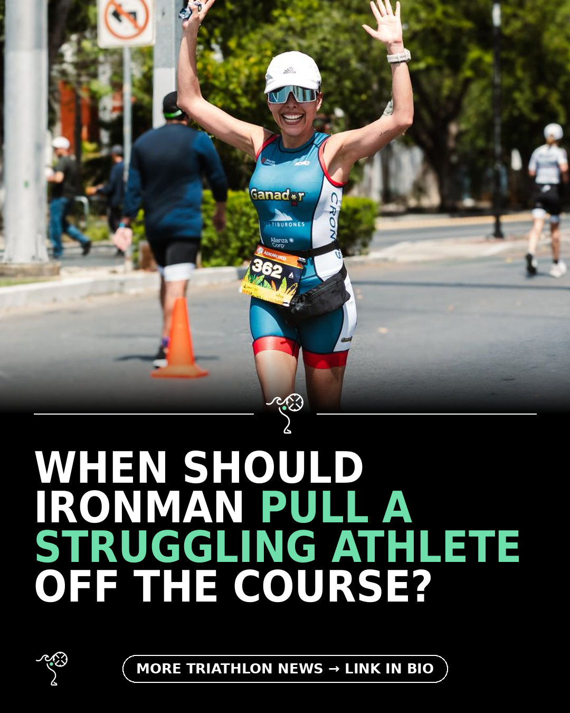

Triathlon News Daily
Tuesday, 13 October 2026 · generated automatically

Today's stories
- Should Ironman stop athletes who can barely stand?220 Triathlon
- The 15 greatest Kona champions of all time, ranked220 Triathlon
- Kona 2026 in pictures: the beauty and the suffering220 Triathlon
- Garmin MARQ Gen 3 review: is a $3,100 watch defensible?DC Rainmaker
- Taylor Knibb: the making of a modern multi-sport great220 Triathlon
- Fitbit Edge Announced: Everything You Need to Know!DC Rainmaker